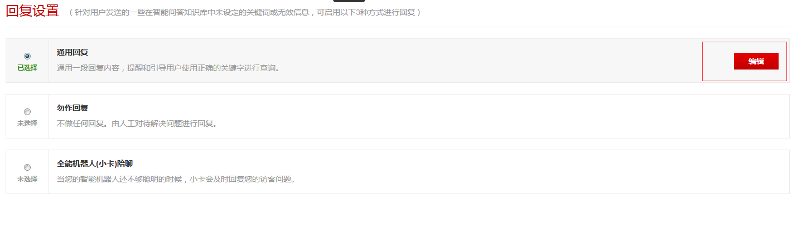
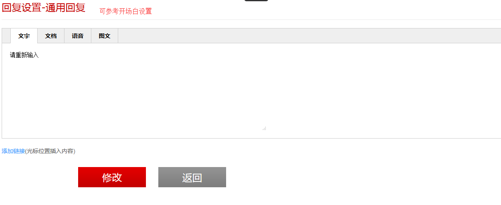

针对用户发送的一些在智能问答知识库中未设定的关键词或无效信息，可启用以下3种方式进行回复
1、通用回复
通用回复是用户在发送消息后，智能回答中的问题无法匹配的一个补充，在这里可以设置一个通用回复内容进行回复。选择通用回复单选框后，可点击编辑按钮设置回复内容，设置方式可参考开场白设置，如下图所示：


2、勿作回复
勿作回复是用户发送消息后，不作任何回复，然后由人工回复待解决问题这样的一个功能。选择勿作回复单选框后，弹出对话框点击确定即设置成功。
3、全能机器人(小卡)陪聊
设置全能机器人(小卡)陪聊后，智能机器人会自动回复。选择全能机器人(小卡)陪聊单选框后，弹出对话框点击确定即设置成功。